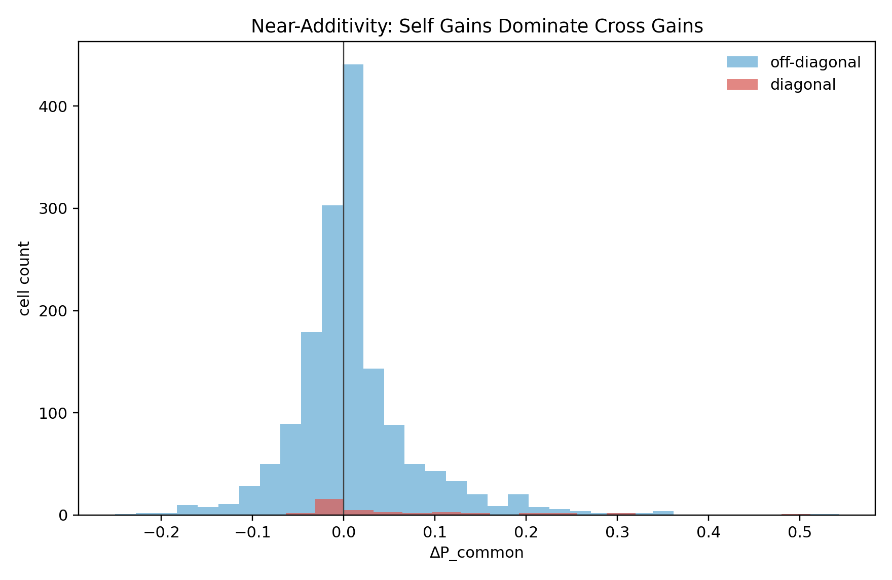
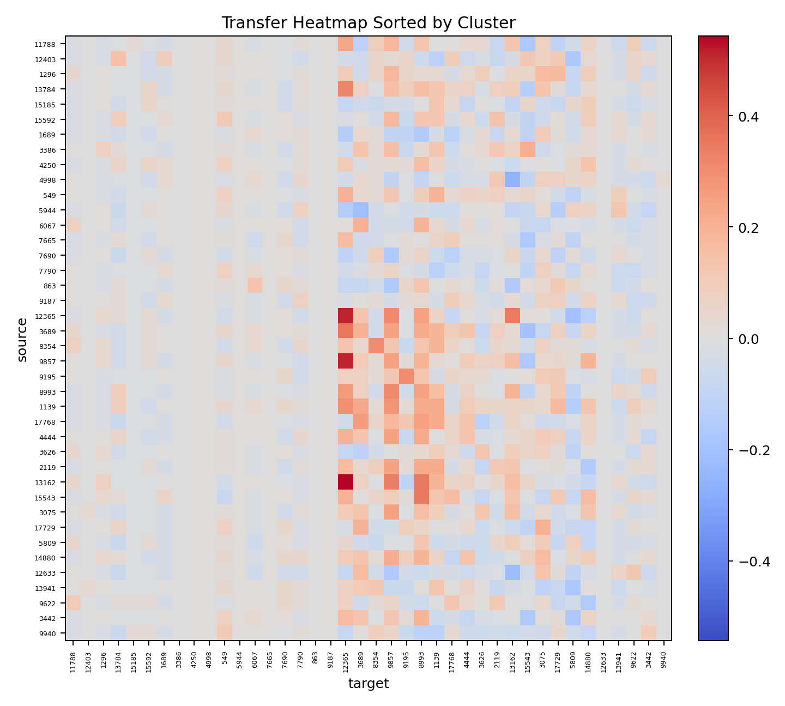
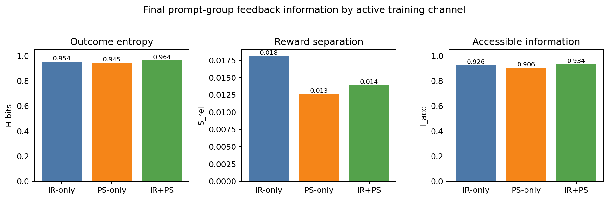
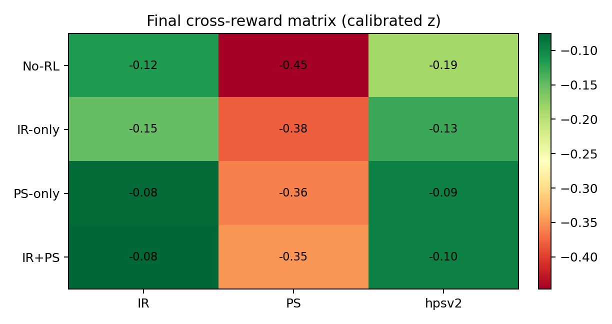

Renew the frontier
Self-play keeps rollouts near the current policy boundary, so terminal binary rewards can remain locally informative as training continues.
Information bottlenecks in verifiable RL
AlphaZero keeps renewing a 50/50 frontier. Fixed LLM math RLVR spends a finite prompt-verifier source. Diffusion VR shows the same pressure in richer, alignment-sensitive reward channels.
Self-play keeps rollouts near the current policy boundary, so terminal binary rewards can remain locally informative as training continues.
Math prompts tend to become all-right or all-wrong. The useful middle-band verifier signal is finite across a fixed dataset.
Dense or multi-reward feedback can expose more distinctions among rollouts, but gains still depend on alignment with the target evaluator.
Evidence


Sharpening
The transfer matrix gives every source prompt a fingerprint over targets. Similar fingerprints define a distance on the dataset: which questions reuse the same update directions, which are isolated, and which should be used as curriculum anchors.


Diffusion VR
Diffusion reward optimization is not binary math verification, but it is governed by the same bottleneck: the reward channel must distinguish multiple rollouts for the same prompt, and those distinctions must match the held-out target.


Design implication
Allocate rollouts to high-information prompts, generate new variants, use dense or process feedback where it is aligned, and use transfer geometry to avoid redundant data.